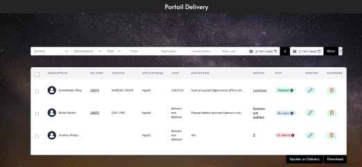

A propos
Je suis Maïlys Andrieu, une développeuse passionnée qui a récemment effectué une transition de carrière vers le monde excitant du développement informatique. Après avoir travaillé dans la métallurgie et le commerce, j'ai découvert ma passion pour la programmation et j'ai décidé de poursuivre cette nouvelle voie avec détermination et enthousiasme. Bien que je sois relativement nouvelle dans le domaine du développement, j'ai déjà acquis une solide base de compétences et de connaissances grâce à mes formations, un apprentissage autodidacte intense et à des projets personnels stimulants. Je suis familier avec des langages tels que HTML, CSS, JavaScript et PHP, les frameworks Bootstrap, (Saas), React et Laravel, avec Figma, Git,et Trello des notions de Java et Python ainsi qu'avec des concepts clés de développement web et de conception logicielle.
Mon parcours professionnel antérieur m'a permis de développer descompétences précieuses en gestion de projet, en résolution de problèmes et encommunication, que je mets à profit dans mon nouveau rôle de développeuse. Jesuis également une apprenante avide de nouvelles connaissances, toujours prêteà relever de nouveaux défis et à perfectionner mes compétences. En dehors du développement, j'ai un intérêt pour réparer et/ou améliorer les objets et les espaces en fonction des moyens du bord.
Je suis convaincu que l'alliance entre ma passion pour la technologie et mes compétences acquises lors de mes expériences pro et extra-professionnelles medonne une perspective unique qui peut apporter une valeur ajoutée à tout projetsur lequel je travaille. Actuellement, je suis engagé dans une démarche d'apprentissage continu et je suis ouverte à de nouvelles opportunités professionnelles qui me permettront de développer mes compétences et decontribuer de manière significative à des projets passionnants.
Je suis impatiente de partager avec vous certains des projets sur lesquels j'ai travaillé et d'échanger des idées avec desprofessionnels de la programmation. N'hésitez pas à explorer mon portfolio et àme contacter si vous souhaitez en savoir plus sur mes compétences et mes expériences. Merci pour votre intérêt, et j'ai hâte de voir ce que l'avenirnous réserve dans ce monde passionnant du développement informatique !
Formations
Conception Développement d’application EPSI:
Langages et outils utilisés: Python, Angular, Docker
Développement web web mobile SIMPLON:
Apprentissage par la réalisation de projets en groupe et en solo avec un projet final de réalisation d’un site de A à Z avec rédaction d’un dossier et une présentation devant un jury.
Langages et outils utilisés: HTML, CSS, Bootstrap, SaaS, Javascript, React,PHP, Symfony, Gitlab, Trello, Figma
voir dossier professionel- Cybersécurité EPSI
Langages et outils utilisés:
Stage
-
Fitness Boutique
Améliorationd’un portail utilisé par le service informatique de l’entreprise dans lequelles collaborateurs pourront renseigner tous les deliveries réalisés, permettantun meilleur suivi et une traçabilité du travail de l'IT.
Langages et outils utilisés: TALL (tailwind, livewire, laravel), wamp, Mysql, github, Jira RestAPI

Hobbies
Acroyoga
Escalade
Bricolage
Botanique
 MailysAndrieu
MailysAndrieu